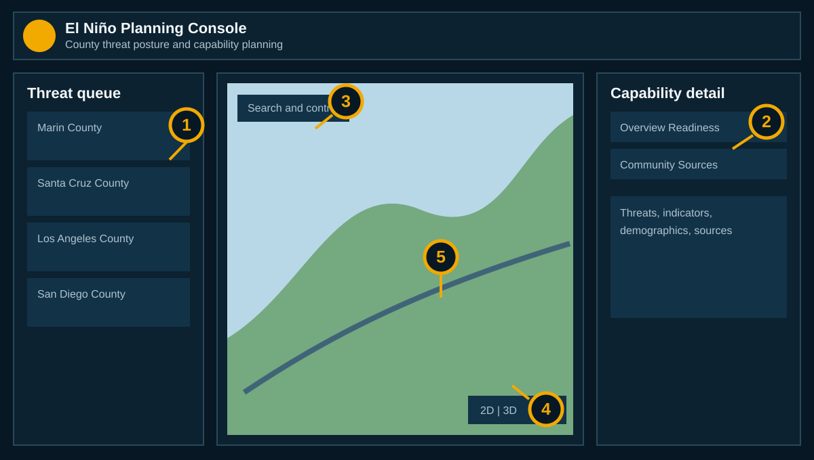
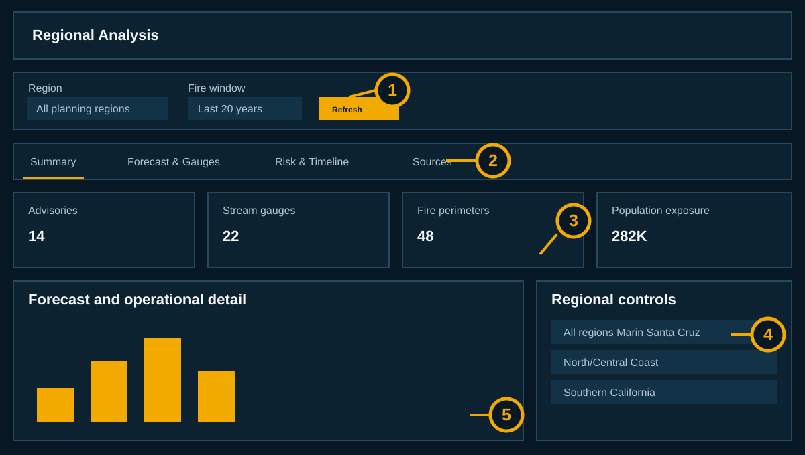
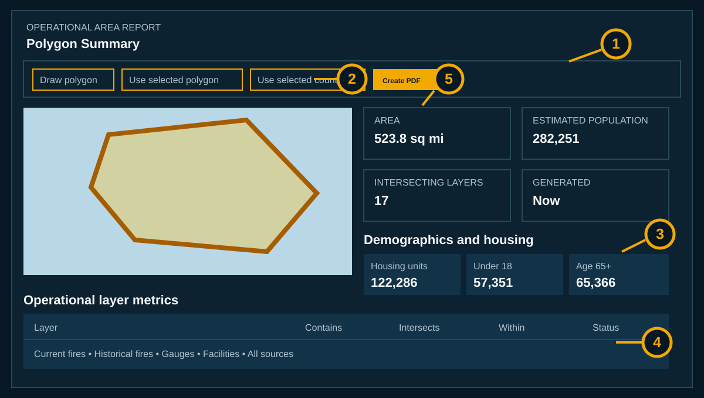
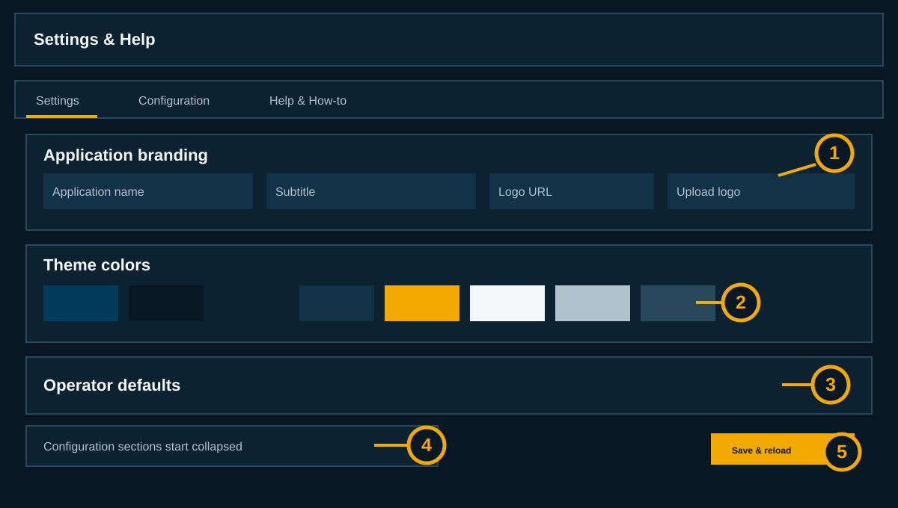

Application branding
Uploaded images are stored only in this browser. Upload takes priority over a URL.
Branding and colors apply throughout the Planning Map, Analysis, Settings & Help, and generated polygon-summary PDFs in this browser.
Theme colors
Operator defaults
The saved Web Map or Web Scene extent is preserved at startup. No county is selected until an operator chooses one.
ArcGIS connections
The redirect URI must also be registered on the OAuth credential. Changing an ID does not change item sharing or permissions.
Deployment diagnostics
- Status
- Loading configuration…
About the console
The California El Niño Planning Console combines a public 2D Web Map, public 3D Web Scene, regional analysis, NOAA precipitation outlooks, USGS post-fire debris-flow assessments, hydrology, facilities, shelters, transportation, demographics, and FEMA risk context.
Planning use: The console supports screening and coordination. It does not replace official warnings, local forecasts, evacuation orders, field reports, or agency systems of record.
Use the Planning Map

- Select a county. Choose Marin, Santa Cruz, Los Angeles, or San Diego from the threat queue. Select the active county again to clear it, restore startup layer visibility, and return to the original saved map extent.
- Review capability tabs. Use Overview, Readiness, Community, and Sources for threats, NOAA/USGS screening, demographics, and provenance.
- Use map tools. Search locations; use Home, Zoom, and Fullscreen; open Map Layers and Legend; add or edit Bookmarks; filter time-aware layers with the Time tool; measure distance or area; and reference the dual-unit scale bar.
- Choose the view. Use 2D for the saved Web Map or 3D for the saved Web Scene and world elevation.
- Inspect a location. Click the map once to open one consolidated popup containing every popup-enabled record at that location. Expand source-layer sections to review configured fields, media, and Arcade-derived values.
Post-fire rainfall readiness
- Select a NOAA forecast horizon from Day 1 through Days 8–14.
- Review county assessment, weather-polygon, and priority-intersection counts.
- Filter USGS assessments by year, fire name, or Fire ID.
- Select an assessment to navigate the active 2D or 3D view and open its popup.
- Use the flame legend to interpret fire age and weather-intersection highlighting.
Interpretation: An intersection identifies monitoring-priority context, not a debris-flow prediction.
Use regional Analysis

- Set the scope. Choose one county or all planning regions, select a historical fire window, and refresh.
- Choose an analysis tab. Use Summary, Forecast & Gauges, Risk & Timeline, or Sources.
- Cross-filter the results. Select a KPI, forecast bar, gauge row, timeline event, risk profile, or source row; use Clear selection to reset.
- Switch regions or AOIs. Use county buttons, North/Central Coast, Southern California, or All regions.
- Open details only when needed. Expand forecast, gauge, and operational-event panes. The page refreshes every 15 minutes while open.
Create a Polygon Summary Report

- Open the report. Open Reports and choose Polygon summary.
- Choose the polygon source. Draw a polygon, use the selected popup polygon, or use the selected county boundary.
- Generate the screening summary. Wait for the map, demographics, housing, potentially at-risk population, and Contains/Intersects/Within metrics.
- Review operational context. Check current and past fire perimeters, USGS post-fire records, gauges, facilities, shelters, structures, and the complete layer table.
- Create the deliverable. Choose Create PDF to download the branded multi-page report.
Configure Settings

- Set the brand. Enter the application name and subtitle, then provide a logo URL or upload an image.
- Choose colors. Set header, background, panels, accent, text, muted text, and border colors.
- Set operating defaults. Choose the initial 2D/3D view, default layers, and legend behavior. Startup preserves the saved map extent and leaves every county unselected.
- Open Configuration when needed. Its connection and diagnostic sections start collapsed and can override the portal, OAuth client, callback, Web Map, and Web Scene for this browser.
- Save or reset. Save & reload validates and stores browser-local changes; Reset to defaults removes them. Repository defaults and ArcGIS items are not modified.
Sign-in troubleshooting
Invalid redirect_uri
Register the exact canonical callback https://jonpedder.github.io/california-el-nino-planning/ on the OAuth credential identified by the configured client ID.
Sign-in loops or returns signed out
Confirm the portal URL has no trailing slash, third-party cookies or redirects are not blocked, the account belongs to the expected organization, and the OAuth credential allows the canonical callback.
Public layers load but demographics do not
Public map content remains available when signed out. Credit-based GeoEnrichment requires an authenticated account with the required privileges.
Methods and limitations
- Forecasts, observations, advisories, inventories, regulatory hazards, and historical incidents have different meanings and update schedules.
- ACS population estimates are area weighted and assume uniform population distribution inside each tract.
- Shelter capacity is a planning inventory and must be verified operationally.
- Road-network availability does not assert a closure, passability, or damage condition.
- Empty NOAA polygons or missing gauge classifications do not prove that no rain or flood risk exists.